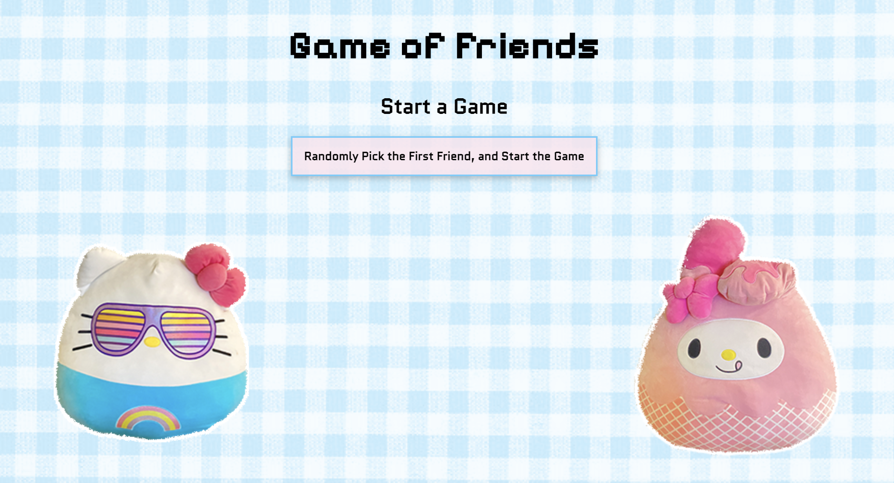

project summary
I plan on updating studio 3, the pig game mainly focusing on improving visual design and a combination of a bit of ux/ui and functionality.
project description
For my final project, I plan on improving the visual apects of the game. For an easier approach, I used images for the players but this time I want to create my own characters that have a stronger impact. I also plan on expanding on my choice of colors instead of a repetition of colors. For the ux/ui part, I want to add more controls and overlays to boast the user interactivity.
expert feedback
For expert feedback I plan on reaching out to professor Wheeler for the ux/ui bits of my project. For the major focus I plan on asking a previous TA from drawing and painting. Then I also plan on asking my previous previous from des 16.